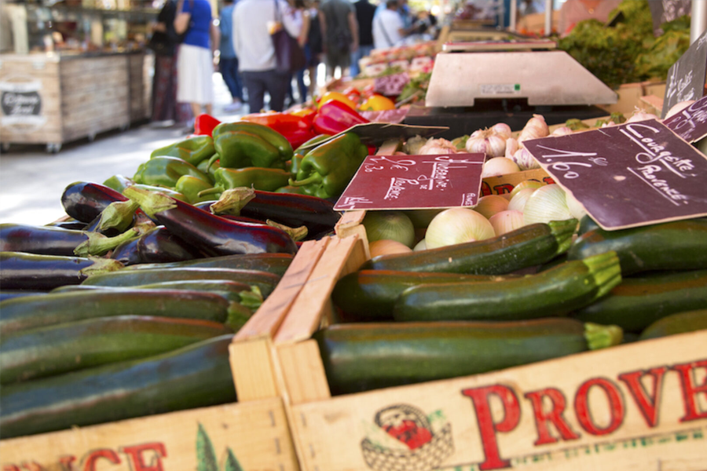

Le véritable emblème des Alpilles est l'huile d'olive AOP Vallée des Baux-de-Provence reconnue depuis 1997. Elle décline en deux profils : le fruité vert, aux arômes d'artichaut cru, d'herbe fraîche et d'amande verte, et l'olive maturée, plus douce, aux notes de tapenade, cacao ou truffe. Elle est souvent produite en monovariétal, à partir de variétés locales comme la Grossane, l'Aglandau, la Salonenque ou la Verdale.
À ses côtés, la région regorge de spécialités provençales : la fougasse, pain doré souvent parfumé aux olives ou au fromage ; les fromages de chèvre de Saint-Rémy ou d'Eygalières ; le miel de garrigue, aux saveurs intenses de thym et de lavande ; l'agneau de Provence, cuisiné en gigot ou côtes grillées ; la tapenade, incontournable à l'apéritif ; et en hiver, la pompe à l'huile, brioche à la fleur d'oranger servie parmi les treize desserts de Noël.